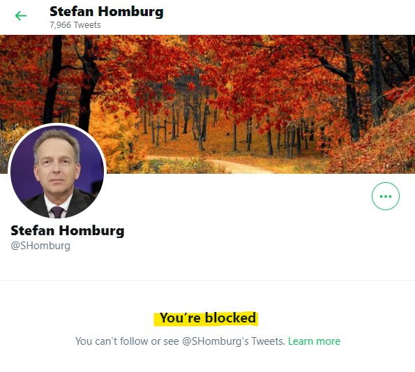

Neu auf dieser Seite
Diese Liste soll helfen am Ball zu bleiben: Gibt es Neues? Was kam wann an neuen Inhalten hinzu?16.4.2021: Stefan Homburg sagte das "Globale Ende der Pandemie" voraus und es geschah - natürlich das Gegenteil
Wie schon öfter, wenn Homburg behauptete, dass eine schlimme Vorhersage nicht eintreffen würde, traf sie - völlig überraschend - doch ein.14.4.2021: Ein falscher Täuschungsvorwurf, der auch nicht zurückgezogen wird, als er bereits entkräftet ist
Homburg wirft der Tagesschau vor die Färbung der Inzidenzkarten dramatischer gemacht zu haben - und bleibt dabei, nachdem er erfährt, dass der Vorwurf falsch ist.13.4.2021: Noch eine Nettigkeit aus dem letzten Sommer: "Dreckschleuder"
Charmant nannte Homburg, der selbst auf fundierter Sachlichkeit besteht und für den schon Duzen ein Grund ist andere zu Blocken die Wissenschaftsjournalistin und Bundesverdienstkreuzträgerin Dr. Mai Thi Nguyen-Kim eine "Dreckschleuder".12.4.2021: Mal so, mal so: Homburg glaubt den Fachleuten vom DIVI - aber nur wenn sie in seinem Sinne sprechen
Stefan Homburg kann sich wohl nicht so recht entscheiden: mal sagt er er vertraut "den Fachleuten vom DIVI", aber seit es von ihnen kritische Appelle zur Senkung der Infektionszahlen gibt... also nein, also das geht für ihn gar nicht.10.4.2021: Neue Rubrik: "Allgemeine Corona-Fakten" (mit Falschbehauptung "Lockdowns töten")
Auch wenn ich gerne bald wieder auf Stefan Homburg zurückkomme - er liefert derzeit täglich sehr verwertbares Material - mal ein erster Vorstoß in Richtung allgemeine Falschaussagen über Corona.In der neuen Unterrubrik "Corona-Fakten" wird nun gezeigt, dass die vage Behauptung "Lockdowns töten" durch nichts belegt ist und es sogar Gegenbeweise gibt.
Außerdem habe ich die Navigationsstruktur überarbeitet.
9.4.2021: That escalated quickly: Homburg hat mich blockiert
Selbstverständlich ohne dass ich einmal eine unbelegte Aussage gemacht oder gar etwas Beleidigendes gesagt hätte, hat Homburg mich kommentarlos blockiert. Ich war ihm wohl zu unbequem.Ich nehme das als Kompliment, als Bestätigung und als Aufforderung meine Anstrengungen zu verstärken und seine Follower weiter und gezielter aufzuklären.
Pah! Meinungsfreiheit! Und dann auch noch durch Quellen belegt! Geht ja gar nicht!
